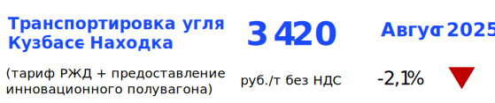

Сухопутная логистика. Полувагоны
Центр ценовых индексов (ЦЦИ) – российское ценовое агентство. Оперативно публикуем цены на товары российского экспорта и логистику.
Сухопутная логистика. Полувагоны
Котировки
30.04.2025
Полувагоны оказались в заложниках угольных цен
- Ставки предоставления полувагонов под перевозку угля по маршруту Кузбасс– Находка в апреле упали на 10-12% к ставкам марта.
- На фоне минимального спроса на типовые полувагоны ставки их долгосрочной аренды опустились ниже 2 тыс. руб./ваг.-сут.
- Средняя расчётная доходность оперирования типовыми полувагонами на маршрутах экспорта угля рухнула в апреле до 1 773 руб./ваг.-сут., инновационными– до 2 565 руб./ваг.-сут.
- При сохранении текущего валютного курса и цен на уголь экспорт энергетического угля из Кузбасса в апреле-мае не станет рентабельным, даже если операторы будут предоставлять вагоны под перевозку бесплатно (с нулевой доходностью).
31.03.2025
Ставки на полувагоны обвалились под натиском дешёвого угля
В марте ставки предоставления полувагонов под перевозку угля снизились до 15% к ценам февраля, под перевозку строительных грузов– до 25%.
Экспортные нетбэки на кузбасский энергетический уголь 5500 ккал/кг, поставляемый через порты Дальнего Востока, упали до отрицательных значений; затраты на железнодорожную транспортировку этого угля достигли 70% от его цены в китайских портах.
Расчётный показатель доходности оперирования типовыми полувагонами на маршрутах перевозок угля снизился до 2,3 тыс. руб./ваг.-сут., инновационными полувагонами– до 3,1 тыс. руб./ваг.-сут.
28.02.2025
Экспортёрам угля всё сложнее платить за его транспортировку
Ставки предоставления полувагонов под перевозку угля остались без изменений в феврале, однако продолжающееся падение угольных котировок и укрепление курса рубля могут скорректировать цены на услуги операторов уже в марте.
На фоне избытка и массового отставления вагонного парка на сети РЖД ставки долгосрочной аренды полувагонов упали до 2 550 руб./ваг.-сут. без НДС.
В январе среднесуточная погрузка строительных грузов на сети РЖД обновила 20-летний минимум.

Ставка предоставления полувагона
Примечание: ставка предоставления полувагона рассчитывается как среднее арифметическое между ставками предоставления типового полувагона под перевозку угля по наиболее ликвидным маршрутам экспорта: Кузбасс – порты Дальнего Востока; Кузбасс – порты Балтики; Кузбасс – порты Азово-Черноморского бассейна; Южная Якутия – порты Дальнего Востока. На эти маршруты приходится до 80% экспорта российского угля железнодорожным транспортом. Источник – ежемесячные отчёты ЦЦИ «Сухопутная логистика. Полувагоны». Полный список публикуемых ставок доступен в Спецификации ставок сухопутной логистики.
События
7 февраля 2025. Пятница с Центром ценовых индексов. Логистика
31 мая 2024. Пятница с ЦЦИ: уголь